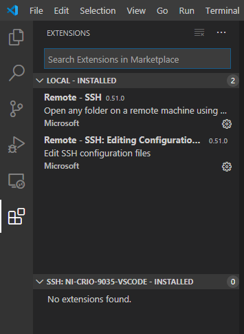
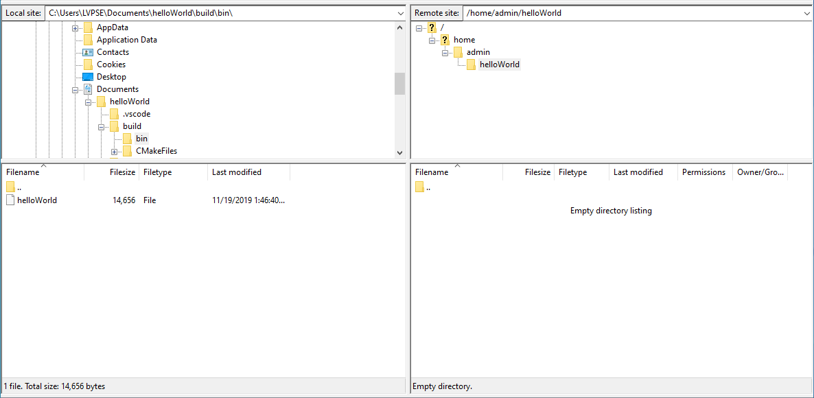

Developing C/C++ Code for NI Linux Real-Time with the Visual Studio Code Remote Development Extension¶
Table of Contents
Introduction¶
This document is intended as an overview of using NI Linux Real-Time and Visual Studio Code Remote Development. It includes using CMake to create a simple “Hello, World!” application.
Requirements¶
OpenSSH (included in Windows 10 as of autumn 2018)
Visual Studio Code with the Remote – SSH Extension
NI Linux Real-Time x64 System - Note: The system should not be in safe mode and should have software installed. ARMv7 NI Linux Real-Time devices are not supported.
A Note on Support¶
While the process documented here worked at the time of writing, this may change as improvements and modifications are made to both the NI Linux Real-Time Operating System and the Visual Studio Code Remote SSH Extension. This tutorial was created with a cRIO-9035, the NI CompactRIO 19.1 Software Set, Visual Studio Code 1.43.2, and Remote – SSH Extension 0.50.1.
For official NI policies on support of third-party Linux tools, refer to the NI Linux Real-Time FAQ.
Why Remote Development?¶
There are two main options for compiling NI Linux Real-Time C/C++ code:
Compile directly on a system running the NI Linux Real-Time Operating System
Compile on a different Operating System using the NI Linux Real-Time Cross Compile Toolchains
Unfortunately, both methods have drawbacks when working with embedded headless systems such as many NI Linux Real-Time Systems. Compiling on target requires either frequent file transfers or editing directly on the target, which can be unwieldy when coupled with the lack of a full-featured editor. Cross compiling requires specialized toolchains and management of a sysroot, which can quickly become complicated with large numbers of dependencies.
Remote development combines the advantages of both types of development: A full-featured editor on a Host PC while performing compilation, development, and debugging directly on a system running NI Linux Real-Time. No cross compiling is necessary, and dependencies can be installed directly to the remote system without concern of linker errors when deploying.
Note: For more information on cross compiling, refer to NI Linux Real-Time Cross Compiling: Using the NI Linux Real-Time Cross Compile Toolchain with Visual Studio Code.
Configuring Remote SSH Development for NI Linux Real-Time¶
Before a project can be created for a Linux Real-Time system with the remote development workflow, some initial setup is required. Specifically, it’s necessary to install development dependencies and configure the remote SSH connection to the NI Linux Real-Time system.
Enabling SSH on the Linux Real-Time Target¶
First, ensure that SSH is enabled on the NI Linux Real-Time device that will be used as the host for remote development, and install the required packages such as the GNU C Compiler and related tools.
In NI MAX, navigate to the System Settings for the NI Linux Real-Time device.
- Under Startup Settings, confirm that the Enable Secure Shell Server (sshd) is checked. If not, enable it and click Save to apply the change and reboot the system.
Configuring SSH Keys¶
It’s easier to manage and interact with a remote development system if an SSH key pair is used. This allows the user to connect from a Host PC to the remote NI Linux Real-Time host for development without requiring a login each time a connection is opened.
It’s recommended to follow the process outlined in the official Remote - SSH Extension documentation to configure these keys easily. Specifically, there are example terminal commands to configure everything quickly from the Host PC in the Remote Development Tips and Tricks document.
Installing Required Packages¶
Before starting a project with remote development, several tools need to be installed to the remote target. It’s possible to install these packages and extensions directly to the target through the remote connection.
- In a Command Prompt or PowerShell, open an SSH connection to the remote host.
- Run the following command to update the list of available packages in the NI-hosted package repository.
opkg update
Using opkg, the following packages need to be installed via the opkg install <package name(s)> command:
packagegroup-core-buildessential – A group of common development packages such as gcc, make, binutils, g++, and more.
gdb – GNU Debugger.
python-core – The python 2.7 interpreter and core modules.
cmake – CMake make system for generating build files.
Configuring Visual Studio Code for Remote Development¶
Once the SSH keys are configured, the remote system can be configured in Visual Studio Code.
Launch Visual Studio Code on the Host PC.
- In Visual Studio Code, open the Remote Explorer view.
- Click the + button in the SSH Targets list to add a new target.

- Enter the ssh command to connect to the target and hit Enter.
Select the SSH configuration file you wish the profile to be saved to. E.g., for user-specific configurations use C:Users<username>.sshconfig.
- The NI Linux Real-Time target should now appear as an option under the SSH Targets view.

- In Visual Studio Code, right-click on the NI Linux Real-Time target and select Connect to Host in Current Window. This will initialize a connection to the remote host and install the required Visual Studio Code components.

- When prompted, choose Linux as the platform of the remote host.
- Visual Studio Code will install the required remote components.Note: You may receive the following warning message:
This message can be safely ignored after confirming the proper versions. Refer to Remote host / container / WSL Linux prerequisites for more information.
Adding Remote Visual Studio Code Extensions¶
Once the required components are installed to the NI Linux Real-Time remote host, it’s possible to install and use certain Visual Studio Code extensions. For this tutorial, the C/C++ Extension will be used to add IntelliSense, debugging, and other features to the Visual Studio Code environment for remote development. To add this extension:
Open a Visual Studio Code instance running on the remote host. This process is described in steps 6 through 9 in the Configuring Visual Studio Code for Remote Development section of this document.
- Open the Extensions view.
- In the Extensions view, search for the C/C++ Extension.

Click the option to Install on SSH to install the extension to the remote host.
- Once the installation is complete, click the Reload Required option to restart Visual Studio Code with the extension.
Note: Using the C/C++ extension will keep an IntelliSense cache on the remote target. This has the potential to get very large with larger projects. The C_Cpp.intelliSenseCacheSize property can be used to mitigate this.
Building, Running, and Debugging a C/C++ “Hello, World!” Program¶
With the environment and extensions installed and configured, it’s time to create a program. This section will cover creating, running, and debugging a simple executable program.
Creating and Configuring a Visual Studio Code Project¶
This section covers creation and configuration of a simple Visual Studio Code project. For more information on the specific configurations, refer to the documentation for Visual Studio Code Projects, Tasks, and the C/C++ extension.
- First, create a folder to act as the workspace root. This can be done in a terminal by navigating to Terminal >> New Terminal in the menu bar.
- In Visual Studio Code, open the folder by navigating to File >> Open Folder, then entering the file path desired. Note: You can also open local folders but doing so will close the SSH Connection and revert VS Code to a local environment.
- Create folders for the project in the Explorer view either with the New Folder button or by using the right-click >> New Folder option.
- Hit Ctrl + Shift + P to open the Command Palette, then search for and select C/C++: Edit Configurations (JSON). This will create and open a c_cpp_properties.json file in the .vscode directory.
- Complete the configuration file as shown below.
{ "configurations": [ { "name": "Linux", "includePath": [ "${workspaceFolder}/**" ], "defines": [], "compilerPath": "/usr/bin/gcc", "cStandard": "c11", "cppStandard": "c++17", "intelliSenseMode": "gcc-x64" } ], "version": 4 }
Save and close the configuration file.
- From the Command Palette, select Tasks: Configure Task. When prompted, choose to Create tasks.json from template and then choose the Others template. This will create a tasks.json file in the .vscode directory from which shell command tasks can be defined. Alternatively, create the file manually.
- Configure tasks.json as shown below.
{ // See https://go.microsoft.com/fwlink/?LinkId=733558 // for the documentation about the tasks.json format "version": "2.0.0", "tasks": [ { "label": "CMake", "type": "shell", "command": "cmake ${workspaceFolder}/build", "options": { "cwd": "${workspaceFolder}/build" }, "problemMatcher": [] }, { "label": "make", "type": "shell", "command": "make", "options": { "cwd": "${workspaceFolder}/build" }, "problemMatcher": "$gcc" }, { "label": "clean", "type": "shell", "command": "make clean", "options": { "cwd": "${workspaceFolder}/build" }, "problemMatcher": [] } ] }
Save and close tasks.json.
Creating a Simple “Hello, World!” Program¶
With the project settings configured, now the C/C++ source file can be created. This tutorial will use a C source file, but C++ would be similar.
- In the Explorer view, create a new file titled helloWorld.c in the src directory by clicking the New File button or right-clicking and selecting New File.

Complete the source file as shown below. Note the IntelliSense functionality provided by the C/C++ extension.
#include <stdio.h> #include <stdlib.h> int main() { printf("Hello, World!!!\n"); return EXIT_SUCCESS; }
Save the source file.
Defining the CMake Configurations and Building the Binary¶
In this tutorial, CMake will be used to generate GNU make files which will direct the build process. For more information on CMake and make, refer to the official documentation for each tool.
- In the Explorer view, create a new file titled CMakeLists.txt in the build directory. This file will define the parameters used by CMake to generate a make file for the project.
Complete the file as shown below. Refer to the CMake documentation for additional configuration options such as compiler flags.
cmake_minimum_required(VERSION 3.7.2) # project settings project(helloWorld VERSION 0.1.0) set(CMAKE_RUNTIME_OUTPUT_DIRECTORY bin) set(CMAKE_GENERATOR "Unix Makefiles") # executable settings add_executable(helloWorld ../src/helloWorld.c) set(CMAKE_BUILD_TYPE Debug)
Save and close the file.
- From the Command Palette (Ctrl + Shift + P), select Tasks: Run Task then CMake. This will run the task created previously to allow Visual Studio Code to invoke CMake. Note the output in the terminal.
From the Tasks: Run Task, select make to build the executable by invoking GNU make.
- Confirm that the executable build successfully.
Running the Executable¶
Now that the executable has been built, we need to test that it runs properly.
Open using Terminal >> New Terminal from the menu bar.
- Change directories to the location of the executable file.
- Run the executable and confirm that it prints the “Hello World!!!” message to the console.
Debugging¶
- Open the Run view in Visual Studio Code.
Click the option to create a launch.json file to create a launch template. For more information on the launch.json file, refer to the official Visual Studio Code documentation.
- When prompted, select C++ (GDB/LLDB) as the environment.

- This will create and open a launch.json file. Complete the file as shown below.
Save the configuration.
Open the source file (e.g., helloWorld.c).
- Place a breakpoint where needed.
Click the green arrow in the Run view to start debugging. Note that this creates a new Terminal which will show the application output while the gdb output is printed to the Debug Console.
Debug as normal using the tools.